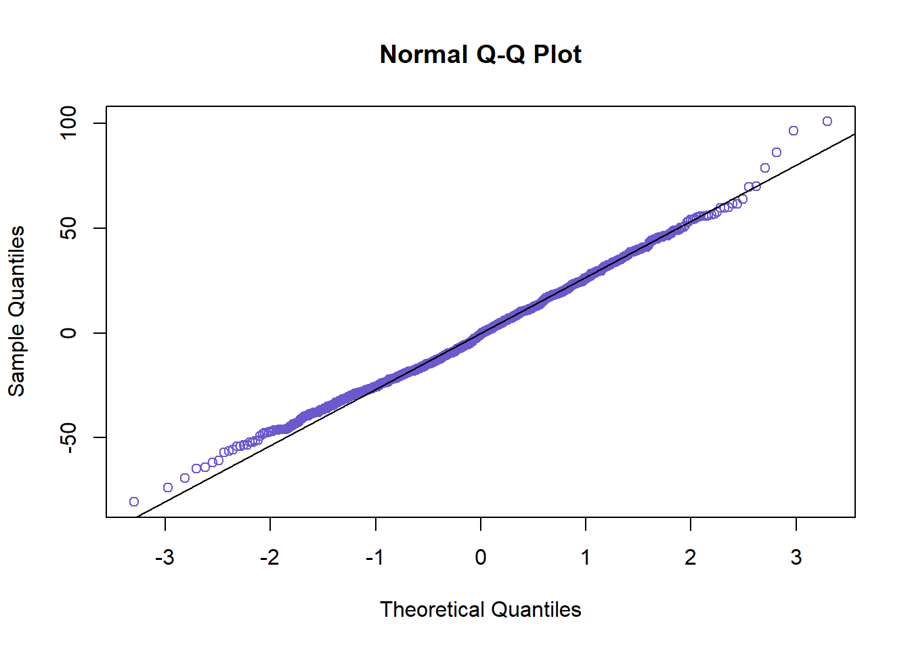
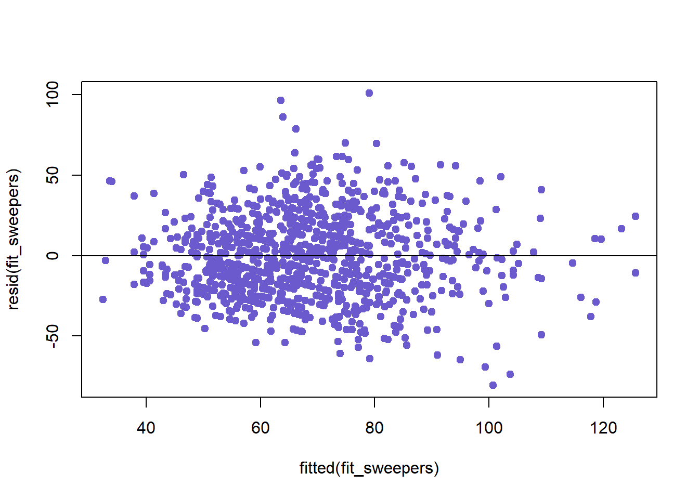

Correlational Studies
The previous section was just a warm up and an opportunity to practice creating a variety of graphs. This section will focus on analyzing statistical trends in the data set.
Task 9: What stats are correlated with each other?
One of the easiest ways to get a preliminary look at the relationship between two variables is to use a correlation plot:
stat_study<-pokemon_data_clean %>%
select(hp, attack, defense, sp_attack, sp_defense, speed)
stat_study_cor <- cor(stat_study, use = "complete.obs")
round(stat_study_cor,2)## hp attack defense sp_attack sp_defense speed
## hp 1.00 0.44 0.30 0.37 0.40 0.19
## attack 0.44 1.00 0.45 0.38 0.26 0.38
## defense 0.30 0.45 1.00 0.23 0.54 0.01
## sp_attack 0.37 0.38 0.23 1.00 0.51 0.44
## sp_defense 0.40 0.26 0.54 0.51 1.00 0.23
## speed 0.19 0.38 0.01 0.44 0.23 1.00library(ggcorrplot)
ggcorrplot(stat_study_cor,
hc.order = TRUE,
type = "lower",
lab = TRUE,
lab_size = 3.5,
outline.color = "white",
method = "circle",
colors = c("orangered","white" , "turquoise3"),
title = "Correlogram of Pokemon Stats",
ggtheme= theme_bw) 
This task could get more nuanced because we can take it a step further and investigate how multiple variables together could help predict another variable (Multiple regression). Additionally, we can check for interactions in the regressions because the presence of one extra variable could affect the relationship between two others.
Because there are six variables and several different combinations of regressions possible, we will examine a single combination. In the competative Pokemon battling sphere (yes, there is one), gamers introduced terms that describe the different roles Pokemon can fulfill in battle. For more information check out this link: https://pokemondb.net/pokebase/38940/what-are-the-different-kinds-pokemon-competitive-battling
These categories are useful to us because the roles tend to be defined by stat distributions. So Pokemon that have particular combinations of stats are grouped into these catgeories. If these categories have any truth to them, then we should be able to find stat combinations that are correlated. For our purposes, we will investigate the variables typically associated with the “sweeper” role: Pokemon with a high speed, high attack and/or high special attack.
To create models that are strong representations of the patterns seen in the data, we need to examine the relationships between the variables in question using scatter plots first. This will help us identify strange features in the data like outliers or non-linearity between variables.
#Scatter Plot for speed vs attack
ap<-ggplot(pokemon_data_clean, aes(x=attack, y = speed)) +
geom_point(shape= 19, size= 2, color = "red", alpha = .5)+
theme_minimal()+
theme(legend.position = "none",
text = element_text(family = "Georgia"))
#Scatter Plot for speed vs sp.attack
spap<-ggplot(pokemon_data_clean, aes(x= sp_attack, y = speed))+
geom_point(shape= 19, size= 2, color ="cornflowerblue", alpha = .5)+
theme_minimal()+
theme(legend.position = "none",
text = element_text(family = "Georgia"))
grid.arrange(ap,spap, ncol=2)
The explanatory variables (attack, sp_attack) seem to have an expected linear relationship with the response variable (speed). No interesting features seem to have been revealed, meaning we can continue to the regression modeling phase.
Let’s run a few regressions to investigate the significance between the “sweeper” variables:
#linear regression attack vs speed
fit_sweepers_a<- lm(speed ~ attack, data = pokemon_data_clean)
summary(fit_sweepers_a)##
## Call:
## lm(formula = speed ~ attack, data = pokemon_data_clean)
##
## Residuals:
## Min 1Q Median 3Q Max
## -73.382 -20.589 -1.215 19.496 106.246
##
## Coefficients:
## Estimate Std. Error t value Pr(>|t|)
## (Intercept) 40.42908 2.29605 17.61 <2e-16 ***
## attack 0.35079 0.02657 13.20 <2e-16 ***
## ---
## Signif. codes: 0 '***' 0.001 '**' 0.01 '*' 0.05 '.' 0.1 ' ' 1
##
## Residual standard error: 27.57 on 1026 degrees of freedom
## Multiple R-squared: 0.1452, Adjusted R-squared: 0.1444
## F-statistic: 174.3 on 1 and 1026 DF, p-value: < 2.2e-16#linear regression special attack vs speed
fit_sweepers_spa<- lm(speed ~ sp_attack, data = pokemon_data_clean)
summary(fit_sweepers_spa)##
## Call:
## lm(formula = speed ~ sp_attack, data = pokemon_data_clean)
##
## Residuals:
## Min 1Q Median 3Q Max
## -77.730 -19.285 -1.098 17.938 102.470
##
## Coefficients:
## Estimate Std. Error t value Pr(>|t|)
## (Intercept) 39.15073 2.03521 19.24 <2e-16 ***
## sp_attack 0.40399 0.02553 15.83 <2e-16 ***
## ---
## Signif. codes: 0 '***' 0.001 '**' 0.01 '*' 0.05 '.' 0.1 ' ' 1
##
## Residual standard error: 26.73 on 1026 degrees of freedom
## Multiple R-squared: 0.1962, Adjusted R-squared: 0.1954
## F-statistic: 250.5 on 1 and 1026 DF, p-value: < 2.2e-16#multiple regression attack & special attack vs speed
fit_sweepers<- lm(speed ~ attack + sp_attack, data = pokemon_data_clean)
summary(fit_sweepers)##
## Call:
## lm(formula = speed ~ attack + sp_attack, data = pokemon_data_clean)
##
## Residuals:
## Min 1Q Median 3Q Max
## -80.706 -18.278 -0.539 17.828 100.957
##
## Coefficients:
## Estimate Std. Error t value Pr(>|t|)
## (Intercept) 26.96255 2.42913 11.100 <2e-16 ***
## attack 0.22991 0.02688 8.553 <2e-16 ***
## sp_attack 0.31831 0.02663 11.953 <2e-16 ***
## ---
## Signif. codes: 0 '***' 0.001 '**' 0.01 '*' 0.05 '.' 0.1 ' ' 1
##
## Residual standard error: 25.84 on 1025 degrees of freedom
## Multiple R-squared: 0.2498, Adjusted R-squared: 0.2483
## F-statistic: 170.6 on 2 and 1025 DF, p-value: < 2.2e-16#multiple regression attack & special attack vs speed with interaction included
fit_sweepers1<- lm(speed ~ attack + sp_attack + attack*sp_attack, data = pokemon_data_clean)
summary(fit_sweepers1)##
## Call:
## lm(formula = speed ~ attack + sp_attack + attack * sp_attack,
## data = pokemon_data_clean)
##
## Residuals:
## Min 1Q Median 3Q Max
## -78.198 -18.669 -0.217 17.659 100.590
##
## Coefficients:
## Estimate Std. Error t value Pr(>|t|)
## (Intercept) 18.6001920 4.5871795 4.055 5.40e-05 ***
## attack 0.3307608 0.0540868 6.115 1.37e-09 ***
## sp_attack 0.4389963 0.0621682 7.061 3.04e-12 ***
## attack:sp_attack -0.0013648 0.0006355 -2.148 0.032 *
## ---
## Signif. codes: 0 '***' 0.001 '**' 0.01 '*' 0.05 '.' 0.1 ' ' 1
##
## Residual standard error: 25.79 on 1024 degrees of freedom
## Multiple R-squared: 0.2531, Adjusted R-squared: 0.2509
## F-statistic: 115.7 on 3 and 1024 DF, p-value: < 2.2e-16From these models, we can see that both explanatory variables are significantly correlated with the response variable. According to the multiple R squared value in the first model, we learned that about 14.5 percent of the variation in speed could be explained by the variation in attack. In the second model, 19.6 percent of the variation in speed can be explained by variation in special attack. Thus, much like the results from the correlation plot, special attack and speed are a little more correlated than attack and speed are.
The first multiple regression shows that about 25 percent of the variation in speed can be accounted for by the variation in attack and speed together. The last model shows another multiple regression which, this time, controls for an interaction between the two variables. This interaction, if significant, could mean that having more or less attack stat could affect how strongly special attack and speed or correlated. In our last model, we can see that although the interaction effect is slightly significant, it does not substantially help predict any more variation than our first multiple regression model. In the gaming context, this makes sense because having more of one of these offensive stats does not guarantee that a Pokemon will be fast and good at the other. Often times, sweepers are good at speed and one of the offensive stats. Although, mixed offensive sweepers do exist, special attacking or physical attacking sweepers are more common.
At this point, either of the multiple regression models could work. However, since the interaction effect in the second model is so small, I will continue with the more general model.
But before moving forward, we need to check whether we violated any of the assumptions that come with building regression models.
#Checking for Normaility
residuals(fit_sweepers)## 1 2 3 4 5 6
## -13.91804983 -6.68147252 2.35420622 -8.78691065 6.98375745 12.85870922
## 7 8 9 10 11 12
## 19.02962556 1.76936000 -1.48390371 -10.91353670 -4.13677764 4.89890110
## 13 14 15 16 17 18
## -15.61462817 4.77403564 -9.51840773 4.04391335 8.62448999 -5.66795338
## 19 20 21 22 23 24
## 13.02181454 78.77647478 7.55079470 14.32755375 33.36323249 32.67328180
## 25 26 27 28 29 30
## 24.20486361 24.20486361 35.49946203 20.98162266 19.37538549 32.92890360
## 31 32 33 34 35 36
## 1.51062309 10.50613022 34.47709940 50.77169782 33.69800252 33.25601350
## 37 38 39 40 41 42
## -10.57187518 -7.38880585 0.72272324 7.08886191 -9.50055823 -2.72379918
## 43 44 45 46 47 48
## 4.01278827 -2.79964952 3.97710953 7.53062764 -21.40687864 -13.29534956
## 49 50 51 52 53 54
## 12.69582721 12.69582721 29.78149274 40.85067490 -31.63227464 -25.11228022
## 55 56 57 58 59 60
## 8.14232936 23.95476716 -32.33102830 -28.96273457 -30.36904485 -32.38000288
## 61 62 63 64 65 66
## -37.90233512 -7.33983127 19.44573076 44.25170340 39.25170340 54.13118857
## 67 68 69 70 71 72
## 44.13118857 39.95926003 39.07528199 -14.63892256 51.25385845 50.36988041
## 73 74 75 76 77 78
## -4.60777722 8.94574089 13.50397517 24.79857359 -5.33767622 10.91675060
## 79 80 81 82 83 84
## 38.80971438 32.17800810 -1.08540445 25.01703758 31.79379663 38.57055569
## 85 86 87 88 89 90
## 55.83827834 -21.49602483 -20.86881143 -22.54068931 -26.48722186 -19.71046281
## 91 92 93 94 95 96
## -12.93370375 17.92573634 31.47925445 -34.90449017 -34.90449017 -28.12773111
## 97 98 99 100 101 102
## -28.12773111 -27.05852868 -27.05852868 22.80522151 22.80522151 29.58198057
## 103 104 105 106 107 108
## 29.58198057 -39.63892256 -46.03642987 -55.58563788 -20.24853003 -8.95393160
## 109 110 111 112 113 114
## -6.11617560 -12.26572125 17.35442952 38.64902794 -6.63227464 4.66232378
## 115 116 117 118 119 120
## -33.08755950 -33.08755950 -21.79296108 -21.79296108 -16.23045723 -5.86000846
## 121 122 123 124 125 126
## 13.15993531 19.93669436 26.71345341 33.98117607 23.14232936 -9.68538816
## 127 128 129 130 131 132
## 0.01767559 -9.06068373 2.23391469 48.63329297 86.07743704 -15.25733300
## 133 134 135 136 137 138
## -33.59228580 -45.89137709 -16.19028562 -16.27062884 -16.27062884 21.30760999
## 139 140 141 142 143 144
## 13.75624693 -28.70596994 -26.00506123 -14.71046281 -14.71046281 -31.05403581
## 145 146 147 148 149 150
## -31.17455064 10.74715987 -11.43824728 28.46380356 25.20039100 1.55959767
## 151 152 153 154 155 156
## 12.85419609 9.49279385 -0.80414240 25.41005202 38.96357013 20.86084401
## 157 158 159 160 161 162
## 29.44573076 35.24056261 19.93669436 28.71583176 12.36538754 11.79192567
## 163 164 165 166 167 168
## 21.71158245 47.31425791 45.96375290 6.20039100 -3.87995222 -13.56091716
## 169 170 171 172 173 174
## -5.27692283 1.06863407 10.10431280 -11.92040791 53.07959209 -22.08989732
## 175 176 177 178 179 180
## -27.81318893 -29.80654101 -22.36239693 -7.86216351 5.90794763 59.79857359
## 181 182 183 184 185 186
## 69.71823037 -42.94250673 8.25601350 12.55725985 0.25816855 -7.59208277
## 187 188 189 190 191 192
## 1.44359597 -9.60106851 28.72817618 10.33544583 16.79953366 18.21584189
## 193 194 195 196 197 198
## -8.82513889 -1.27025465 7.76542409 6.98375745 12.85870922 19.02962556
## 199 200 201 202 203 204
## -12.91215029 -6.13539124 1.75074185 -28.67911443 31.24054235 4.68112470
## 205 206 207 208 209 210
## 4.16759543 10.70698826 32.48374732 -23.48937691 -26.75278947 60.06414120
## 211 212 213 214 215 216
## 13.47571300 2.51139174 12.70034034 -32.03409205 -31.59210303 -24.29301174
## 217 218 219 220 221 222
## -21.62347167 9.26050637 20.55510480 -21.84886767 -20.07210861 -25.81103388
## 223 224 225 226 227 228
## -56.32456315 -24.00290618 2.07312694 -7.55642429 -29.50267275 -2.85336054
## 229 230 231 232 233 234
## 3.84988599 28.36772536 52.88556473 29.21153179 -13.40903369 -47.62796454
## 235 236 237 238 239 240
## 29.22033476 -30.26613597 -32.19477849 26.71345341 3.99493877 17.43908284
## 241 242 243 244 245 246
## -46.03642987 17.18681107 -18.43410834 -12.05368188 10.99709382 -38.04738789
## 247 248 249 250 251 252
## -26.75278947 -18.74614155 29.65352081 -34.01170915 -43.20807433 -28.08755950
## 253 254 255 256 257 258
## -28.65006335 18.68919955 -9.35761998 -7.13887190 -27.44471243 16.56652967
## 259 260 261 262 263 264
## -7.22801809 55.05533822 -21.27062884 -25.72375865 -38.44040233 -37.10563230
## 265 266 267 268 269 270
## 1.99278372 -19.05188076 -25.29750461 -30.29750461 2.40340410 -39.52523842
## 271 272 273 274 275 276
## 14.70249539 8.37652833 11.91244050 -1.22165426 12.33186385 22.78265584
## 277 278 279 280 281 282
## 5.95692221 -13.48937691 -23.65006335 -18.77751019 9.13999154 37.07312694
## 283 284 285 286 287 288
## -11.15011401 10.05533822 4.08408496 32.86322236 16.51277814 41.91244050
## 289 290 291 292 293 294
## 1.86533688 31.88987483 17.95027429 12.14663946 -15.00054810 -15.96486936
## 295 296 297 298 299 300
## -27.00953384 -23.90680772 33.69800252 -1.86450133 18.21584189 12.00158669
## 301 302 303 304 305 306
## 26.03726543 40.07294417 46.59293859 -18.03858492 -18.56091716 -9.56541003
## 307 308 309 310 311 312
## -5.12791388 -18.97153754 -15.60324382 -19.30864540 -21.68807991 -14.15676193
## 313 314 315 316 317 318
## 3.24721053 16.59096631 16.59096631 41.02846246 41.02846246 -23.67460130
## 319 320 321 322 323 324
## -27.96704467 -9.88688422 -27.96704467 10.62664504 -16.59210303 -7.55642429
## 325 326 327 328 329 330
## -1.70381489 -15.70812499 -2.15460688 1.39891123 35.84323807 54.62215217
## 331 332 333 334 335 336
## 33.63329297 -3.69716697 -7.03409205 -5.69932202 -1.69501192 0.97452815
## 337 338 339 340 341 342
## 15.22482763 7.41220707 -13.89119432 -5.94915465 -21.89784225 27.13783649
## 343 344 345 346 347 348
## 6.01282880 -6.85767064 96.43027987 -17.20358146 -26.92157102 -17.88589228
## 349 350 351 352 353 354
## -8.85021354 -22.12323824 -17.28392468 -17.92687306 -21.63227464 1.55079470
## 355 356 357 358 359 360
## 30.58647344 -14.89568720 -53.56091716 -14.01170915 -18.60989174 -25.78846821
## 361 362 363 364 365 366
## -23.56972013 -21.35097206 -28.24824594 11.10880568 20.14448441 24.58198057
## 367 368 369 370 371 372
## 7.00158669 27.37203546 47.82282745 29.48590237 34.96806300 26.29365587
## 373 374 375 376 377 378
## 23.99531296 -7.58779293 -10.53584251 -11.98232441 -3.34432414 10.20919397
## 379 380 381 382 383 384
## 10.83640738 -5.33767622 -16.30199748 -26.44705025 -43.37569278 -80.70615271
## 385 386 387 388 389 390
## -53.56091716 5.00823461 14.04391335 0.14448441 -54.27727676 11.02846246
## 391 392 393 394 395 396
## 24.58198057 -38.56091716 -35.00739905 1.10880568 14.66232378 -7.26631874
## 397 398 399 400 401 402
## 17.49948230 -16.78415811 0.15328739 3.68919955 7.35969104 -9.08679085
## 403 404 405 406 407 408
## -26.27062884 -28.19927136 6.10880568 9.66232378 -32.80554906 -28.36805291
## 409 410 411 412 413 414
## 13.46380356 -32.98267833 46.40574192 8.41220707 4.66232378 4.66232378
## 415 416 417 418 419 420
## 4.66232378 4.66232378 -26.75278947 -19.25907333 -14.82157718 -19.50010298
## 421 422 423 424 425 426
## -20.70812499 -37.15460688 -14.51447182 -3.69716697 -5.72375865 16.94578142
## 427 428 429 430 431 432
## -16.57152125 -4.37335496 9.18016315 7.25152063 -28.66579833 -19.63011959
## 433 434 435 436 437 438
## -10.59444085 -33.23144917 -28.79395302 -30.56190911 -6.97818546 50.40789697
## 439 440 441 442 443 444
## -6.93801385 -17.90233512 6.98595303 21.50379240 -20.74829660 -11.71261786
## 445 446 447 448 449 450
## -18.23944297 16.27839640 -15.86881143 -20.28870164 -18.07875653 29.63095515
## 451 452 453 454 455 456
## 15.48356455 20.96572518 2.22015199 -7.69950479 -28.74416927 -3.27961458
## 457 458 459 460 461 462
## -26.09223514 -14.19496126 -10.64144315 18.21584189 40.80503874 24.35855685
## 463 464 465 466 467 468
## 24.66232378 100.95692221 -25.92018462 -28.93134567 -19.89566693 2.24091654
## 469 470 471 472 473 474
## 11.27659528 24.02297764 -18.10464035 -17.91941597 -22.06680657 10.84323807
## 475 476 477 478 479 480
## 23.06198615 29.53300598 -17.44920530 6.98829085 -15.66795338 0.98829085
## 481 482 483 484 485 486
## -9.63892256 -5.60324382 -14.79080603 5.22482763 7.15544244 -7.25040099
## 487 488 489 490 491 492
## -27.58750884 -19.98762645 -23.87825241 -6.86081763 -29.67343819 -27.90548211
## 493 494 495 496 497 498
## -28.78946015 -12.49486173 26.59096631 -30.81983685 43.36772536 23.99493877
## 499 500 501 502 503 504
## 36.84090025 -19.74440122 16.55019721 -22.14168523 -36.32924744 45.94811924
## 505 506 507 508 509 510
## 12.44357571 5.99709382 28.85794058 43.37577995 59.58123218 30.82067240
## 511 512 513 514 515 516
## -18.12342101 32.02355487 45.81325583 -9.54977637 19.50258876 13.05610687
## 517 518 519 520 521 522
## -17.11973732 -39.57071208 -38.53835149 5.00823461 -2.88670145 19.80911689
## 523 524 525 526 527 528
## -42.39842960 -13.78846821 18.43027987 19.68470668 -12.24393584 -54.23710515
## 529 530 531 532 533 534
## 5.80306646 1.14214659 7.13765372 -23.61167260 -27.35724578 16.99278372
## 535 536 537 538 539 540
## 28.24721053 -10.40373165 6.29268419 -32.60108877 12.17486111 26.21053985
## 541 542 543 544 545 546
## -0.65915041 -20.95194771 -17.39842960 -69.32707212 56.12454065 -24.43609223
## 547 548 549 550 551 552
## -21.96938249 -36.65671127 -34.96722744 9.51946658 -5.59228580 3.34515969
## 553 554 555 556 557 558
## 13.64075006 23.64902794 -17.13700094 31.87226889 0.86777602 1.67328180
## 559 560 561 562 563 564
## 3.60885633 24.41249116 -23.48057394 -25.64341543 39.18016315 22.30283303
## 565 566 567 568 569 570
## 10.67112675 10.67112675 10.67112675 10.67112675 10.67112675 26.92124347
## 571 572 573 574 575 576
## -4.52523842 19.51044032 -12.29768738 -2.29768738 -12.03427482 10.78743280
## 577 578 579 580 581 582
## 8.21584189 -2.74847937 18.07078912 9.18016315 18.21584189 34.37419051
## 583 584 585 586 587 588
## 18.21584189 38.15997583 27.25152063 18.21584189 11.36772536 23.14448441
## 589 590 591 592 593 594
## 44.92124347 -10.77063897 -15.62558619 -22.07206808 -14.66089074 -10.62521200
## 595 596 597 598 599 600
## -14.33061358 -8.74829660 11.39675618 6.28522709 3.50397517 13.42363195
## 601 602 603 604 605 606
## 11.62664504 30.79443465 7.98199686 20.31227402 7.98199686 20.31227402
## 607 608 609 610 611 612
## 7.98199686 20.31227402 -30.03684459 -44.66639582 -8.06660353 4.41909855
## 613 614 615 616 617 618
## 18.90794763 19.32755375 40.58198057 -37.16340985 -47.01835707 -52.09870029
## 619 620 621 622 623 624
## 17.18465602 49.42299393 11.94596419 14.08436904 -9.85551559 -16.22165426
## 625 626 627 628 629 630
## -18.31295550 -23.83528774 -31.65671127 9.62664504 6.40340410 -1.86000846
## 631 632 633 634 635 636
## -14.50267275 19.74959901 -9.88001301 -15.36217364 19.07532251 10.14232936
## 637 638 639 640 641 642
## -5.33983127 44.53965391 21.05254516 49.12390264 -27.29085669 14.22913773
## 643 644 645 646 647 648
## 24.42125360 24.42125360 10.34324820 13.86108757 17.44812937 -2.42897746
## 649 650 651 652 653 654
## -2.42897746 26.30096207 -23.42279639 26.30096207 61.70277948 -20.47527190
## 655 656 657 658 659 660
## 1.95261211 -26.79296108 -7.34647919 -3.97818546 23.91710453 -21.36670703
## 661 662 663 664 665 666
## -19.15676193 -38.69716697 -39.76573138 -46.21221327 -6.26708739 15.19979351
## 667 668 669 670 671 672
## 13.80971438 7.09766488 -2.37119990 15.70015757 23.80971438 45.50613022
## 673 674 675 676 677 678
## -6.36670703 -6.18148265 -4.84671261 -47.28205372 -45.94728368 -51.69501192
## 679 680 681 682 683 684
## 3.91594142 23.34265071 -15.14795896 -8.37119990 -4.81768180 21.51062309
## 685 686 687 688 689 690
## 25.94811924 34.92124347 3.06198615 -57.09870029 -42.11443527 -43.56091716
## 691 692 693 694 695 696
## -16.84886767 -7.81318893 8.06198615 9.08822390 32.45867267 -36.09737468
## 697 698 699 700 701 702
## -45.76258438 -23.93136593 -17.63676751 17.76504990 6.06863407 -30.37784783
## 703 704 705 706 707 708
## -36.82432972 -36.66364328 -43.99410321 -34.54977637 -11.39807567 -5.76205930
## 709 710 711 712 713 714
## 0.48614593 0.40580271 17.14239015 -22.15460688 -29.13222398 36.30283303
## 715 716 717 718 719 720
## -23.89119432 70.11311578 -35.91941597 -34.59344891 0.98829085 19.05964833
## 721 722 723 724 725 726
## -25.65006335 -20.11657006 -17.97816520 0.76289485 -4.79960900 -9.98483338
## 727 728 729 730 731 732
## 2.17763391 6.61513006 6.06863407 20.58647344 -17.68596539 41.69862028
## 733 734 735 736 737 738
## -18.23045723 -9.19477849 7.10862291 -2.42017449 16.27146439 31.69800252
## 739 740 741 742 743 744
## 28.46107128 31.69800252 17.80953161 36.03277256 17.80953161 3.74248423
## 745 746 747 748 749 750
## -12.29768738 -9.64575325 8.69350965 -2.72160360 -3.23064000 -9.24393584
## 751 752 753 754 755 756
## -13.66382605 23.42239644 23.42239644 4.59115773 47.09944574 6.25152063
## 757 758 759 760 761 762
## -18.26574151 -5.72065218 -11.11754174 2.95650749 3.82518554 24.88672783
## 763 764 765 766 767 768
## 11.42750706 29.13369755 40.41046674 22.99966359 11.57489766 22.24719027
## 769 770 771 772 773 774
## 10.80971438 22.42889347 56.86009563 -8.60365854 -11.61483986 21.43454944
## 775 776 777 778 779 780
## 10.30558557 28.70817163 -13.11582167 -9.18148265 -2.55702178 -9.64167510
## 781 782 783 784 785 786
## -12.82923731 -17.45721936 -19.43446227 35.95476716 9.94847317 39.58233449
## 787 788 789 790 791 792
## 39.58233449 -28.49602483 -31.57636805 -49.19496126 5.62664504 -35.97116335
## 793 794 795 796 797 798
## -46.02839555 -7.77829910 -0.41137151 -6.15500134 3.24093680 -1.33179694
## 799 800 801 802 803 804
## -0.29158481 -29.85551559 -31.08150907 -13.60953781 -22.94275029 14.88417833
## 805 806 807 808 809 810
## 34.69699031 -13.74827633 -5.74473488 -15.85375499 -18.17794120 -16.92040791
## 811 812 813 814 815 816
## 46.33109520 34.91985707 -4.37335496 -15.96488962 -10.62521200 -4.96722744
## 817 818 819 820 821 822
## 4.18016315 -20.97153754 -16.94250673 -5.14205942 -0.14205942 -10.14205942
## 823 824 825 826 827 828
## -15.14205942 17.88382440 34.03337005 1.73427875 -14.41526690 -25.01210361
## 829 830 831 832 833 834
## -39.86742503 6.81636230 49.06803658 0.22114394 0.22114394 19.26367363
## 835 836 837 838 839 840
## 45.62981230 6.08060430 -31.78415811 -4.67712189 -29.99859608 -37.86019123
## 841 842 843 844 845 846
## -23.63245741 -13.52290060 -14.48722186 -13.39352201 8.99493877 18.03061751
## 847 848 849 850 851 852
## -18.86665638 -20.38590241 -21.79221269 -24.08250102 11.24505548 15.76289485
## 853 854 855 856 857 858
## -18.42466736 -7.60539887 -24.75943739 -12.72379918 -27.32198176 -46.21069624
## 859 860 861 862 863 864
## 3.81600837 -34.04558677 18.74972964 18.74972964 18.74972964 18.74972964
## 865 866 867 868 869 870
## 29.18465602 54.15328739 8.54414678 8.54414678 41.09101696 11.09101696
## 871 872 873 874 875 876
## 38.63119871 0.48159227 -73.71280063 -7.83493381 -23.31709444 -19.27727676
## 877 878 879 880 881 882
## -38.20807433 -21.89119432 -16.97153754 -20.52290060 -31.56756508 -40.69932202
## 883 884 885 886 887 888
## -35.95608665 17.32165422 39.99119428 -8.52954852 -13.20807433 -11.40903369
## 889 890 891 892 893 894
## 13.10880568 1.53300598 34.98100491 -9.40472359 12.71607532 38.62448999
## 895 896 897 898 899 900
## -34.79960900 -46.88903927 -41.03642987 -45.30630758 -20.04307779 15.95692221
## 901 902 903 904 905 906
## 0.14448441 38.21584189 -12.27512171 -37.86139486 33.77407617 32.43027987
## 907 908 909 910 911 912
## 18.61550425 -47.72853561 -44.45504405 -8.93136593 0.10431280 0.91675060
## 913 914 915 916 917 918
## 46.35873962 7.11527083 -8.90682799 10.55510480 -5.86081763 -5.86081763
## 919 920 921 922 923 924
## 2.57121397 0.44966667 23.42728377 3.20981172 48.93184756 -19.49156384
## 925 926 927 928 929 930
## -23.24221577 21.64378669 -38.05914644 -12.98780922 -22.02696862 -25.91647201
## 931 932 933 934 935 936
## 10.48536567 -25.18382047 40.65118299 6.01767559 36.82910118 -60.95091524
## 937 938 939 940 941 942
## 2.77464178 57.82031847 -25.41352656 -51.30411200 10.36107744 15.98829085
## 943 944 945 946 947 948
## 10.20039100 12.98162266 29.75838172 44.67803850 11.55959767 19.00374174
## 949 950 951 952 953 954
## 33.70680549 -25.74829660 -46.31080045 8.72759030 20.94633838 3.16508646
## 955 956 957 958 959 960
## 5.48159227 -20.92471801 27.22698268 1.63956669 22.01001547 -38.89119432
## 961 962 963 964 965 966
## -3.92256296 -0.89119432 23.54630183 -9.77239956 5.31916550 -24.04073997
## 967 968 969 970 971 972
## 44.69800252 -18.89119432 -9.85551559 -40.81983685 -28.89119432 -12.49171473
## 973 974 975 976 977 978
## -48.33552117 -5.20811486 -1.25277934 11.43908284 11.82089570 61.66020926
## 979 980 981 982 983 984
## -12.88767314 -10.78063692 -10.78063692 -12.82199190 -17.04972571 -26.51171928
## 985 986 987 988 989 990
## -34.37331443 -10.86317571 -14.55977432 -12.68501397 -14.53331327 -61.94411642
## 991 992 993 994 995 996
## -4.81534398 5.36988041 -24.79080603 28.24721053 -18.16790272 -64.95842447
## 997 998 999 1000 1001 1002
## -14.64515576 -11.51859050 -34.71926578 -18.07426366 -11.77086227 2.76504990
## 1003 1004 1005 1006 1007 1008
## -64.14930483 -27.03409205 -16.69501192 7.93266835 -16.04523284 63.95476716
## 1009 1010 1011 1012 1013 1014
## 19.67112675 15.15328739 25.91459555 25.91459555 -18.08755950 -52.31529332
## 1015 1016 1017 1018 1019 1020
## -0.41801943 -23.60108877 5.06414120 -18.11892814 -2.00075113 28.51062309
## 1021 1022 1023 1024 1025 1026
## 37.54630183 55.61765930 56.48834151 55.68470668 45.68470668 55.68470668
## 1027 1028
## 37.34066682 36.80953161qqnorm(residuals(fit_sweepers), col= "slateblue" )
qqline(residuals(fit_sweepers))
#Checking for Constant Conditional SDs and Linearity
plot(fitted(fit_sweepers),resid(fit_sweepers), col= "slateblue", pch= 19)
abline(h=0) 
None of the assumptions seem to have been violated, so we can move to the last stage and plot our multiple regression.
library(visreg)
visreg(fit_sweepers, "sp_attack", by= "attack", gg= TRUE,
line= list(col ="slateblue1"),
fill = list(col = "grey85"))+
theme_bw()+
labs(title = "Sweepers Multiple Regression")+
theme(text = element_text(family = "Georgia"),
plot.title = element_text(size = 13, margin(b = 10), hjust = 0.5, family = "Georgia"))